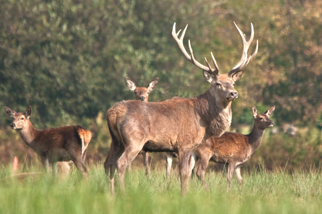
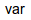
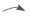
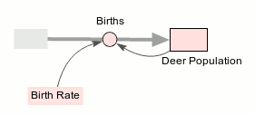

SystoLite tutorial: Deer Population
Student Guide

In many places, deer have become nuisance animals because they are so numerous. In some areas,
a hunting season has been introduced or lengthened to reduce the number of deer. In other areas,
animals that prey on deer—like wolves—have been brought back. You can use a System Dynamics model
to simulate how a deer population changes over time as different factors affect birth and death
rates.
This tutorial will lead you through the steps involved in building such a model.
The Systo toolbar
The tool bar that you will be using for this tutorial looks like this:
These are the icons you will use to build your model.
|
stock |
Represents the amount of some substance, such as water, carbon, or individuals in a population. |
|  |
variable |
A parameter (input variable) or an intermediate variable. |
|
flow |
Represents the flow of some substance, such as the flow of water, carbon, or individuals in a population. |
|  |
influence |
Shows that one component influences (is used to calculate) another. |
To add a stock or variable:
Click on the icon in the toolbar; move the mouse to the target area in the diagram panel; then click again.
To add a flow or influence arrow:
Click on the icon in the toolbar; move the mouse to the start position for the arrow; push the muse button down and drag to the end position for the arrow; then release the mouse button.
Building the Model
Make the model diagram
First, create a stock to represent the deer population:
Create a reproduction flow into the population:
Create the birth-rate parameter:
Draw the influence arrows:
Your diagram should now look like this:

Note that the symbols are pink, indicating that the model is not complete. So, we need to....
Assign values and equations
We assume that there are 10 deer to start with:
We assume that females are half the population and that half of the does produce
one fawn each year to add to the population:
The Births flow is now simply the birth rate multiplied by the population size:
Q1. At a birth rate of 0.25, the population should increase by what percent each year?
Running the model
Changing the run duration
Edit the value of 100 next to "End time" in the bottom-left panel, and change it to 10.
Run the model
Click on the Run button in the same panel.
Observe the graph showing the deer population size plotted against time in years.